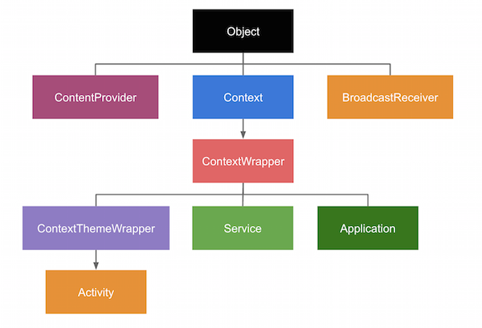

BaseContext?
최근에 노재춘님의 ‘안드로이드 프로그래밍 Next Step’ 책을 읽으면서 baseContext 와 activityContext 가 왜 다른지 의문이 생겼습니다.
그래서 간단하게 context 에 대해 학습한 내용을 정리해봤습니다.
클래스 구성도

그림을 보면 Context 를 상속한 ContextWrapper 를 각각의 컴포넌트들(액티비티, 서비스, 어플리케이션)이 상속하고 있습니다.
그리고 ContentProvider 와 BroadcastReceiver 는 자신의 context 가 없다는 것을 알 수 있습니다.
Context 의 종류
- ApplicationContext
앱이 실행되어 있는 동안에 생성되어 있는 Context 입니다. 주로 액티비티의 생명주기와 무관한 경우에getActivityContext()함수로 가져와서 사용하게 됩니다. - BaseContext
액티비티가attachBaseContext()함수를 호출하는 시점에 받게 되는 context 입니다. 주로 asset, 시스템 정보를 가져올 때 사용됩니다. - ActivityContext
액티비티가 Context 를 상속하는 구조이기 때문에 액티비티 또한 context 로서 동작합니다. 주로 화면의 뷰를 생성하거나 다른 컴포넌트를 실행할 때 사용합니다.
BaseContext 와 ActivityContext 는 다른건가?
ContextWrapper 클래스가 Context 를 상속받기 때문에 Activity 또한 Context 가 됩니다.
1 | public class Activity extends ContextThemeWrapper {} |
액티비티에서 attach() 함수 내부에서 ContextWrapper 클래스의 attachBaseContext() 함수를 호출하여 ActivityThread 에서 생성한 Context 의 구현체 클래스인 ContextImpl 을 받게 됩니다.
이때 받는 context 가 baseContext 입니다.
1 | // MainActivity.java |
Calligraphy 라이브러리 원리
Calligraphy 라이브러리는 지정한 폰트를 간단하게 앱 전역 폰트로 적용할 수 있는 라이브러리입니다.
어플리케이션 클래스에서 설정을 초기화하고, 액티비티에서는 간단하게 다음의 코드를 추가해줌으로서 설정에서 지정한 폰트를 앱 전체에서 적용되게 할 수 있습니다.
코드를 살펴보면 attachBaseContext() 함수를 활용하여 기능을 구현한 것을 알 수 있습니다.
1 |
|
attachBaseContext() 함수를 호출할때 baseContext 를 CalligraphyContextWrapper 로 감싸주게 됩니다.CalligraphyContextWrapper 클래스에서는 getSystemService() 함수가 재정의되어 있습니다. 이후 액티비티에서 layoutInflater 를 얻어올 때, 지정된 폰트가 적용된 뷰를 반환하게 하기 위한 CalligraphyLayoutInflater 로 가져오기 위함입니다.
1 |
|